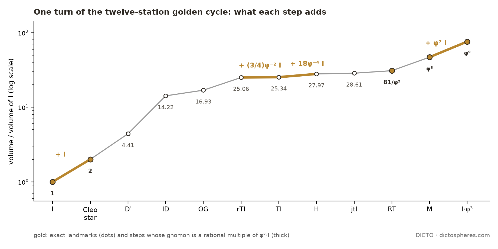

Theorem: in DICTO's twelve-station golden cycle, one whole turn is a gnomon in the classical sense of Euclid and Heron, and no shorter run of steps is; within the turn from I, its last step is the only step whose new whole is similar to an earlier station. The keyed DICTONIC pair is the golden pair minus and plus the same eight Tricaps, and the golden pair's polars are cubes with face pyramids of heights 1/φ and 1/φ², which add up to Kepler's rhombic dodecahedron
Draft for DICTO. Júlia Pimentel's method is cited from news reports [12, 13], which do not name a journal. Not published.
Both ideas came on 24 and 25 October 2026, and both look at the piece in between: what a step of the cycle adds, and the eight small pieces that a key or a dent moves from one solid to the other.
The golden cycle grew over three of DICTO's papers. The Spheres of Dharma [2] nest classical icosahedral solids so that the next icosahedron, φ³ times larger, closes one turn. Progenitors [3] set DICTO's Ogdoecontahedron (OG) and Hecatodihedron (H) [4] into the cycle, with the core and hull of their compound, the rectified truncated icosahedron (rTI) and its dual (jtI). Vajrayana [5] added DICTO's Cleo star and its hull D′, and closed the last loose step with the DICTO Metaxyhexecontahedron (M) [6], making twelve stations.
The gnomon is one of the oldest ideas in geometry. Euclid defines it for parallelograms, as the L-shaped piece left when a smaller similar parallelogram is taken from a corner [7, Book II, Definition 2]; Heron defines it in general as that which, added to a figure or number, makes the whole similar to the figure to which it was added (quoted in Heath's commentary on that definition [7]); growth by gnomons is the theme of D'Arcy Thompson's chapter on the equiangular spiral [8]. For squares the gnomon is the strip n + (n + 1), the structure of n² + n + (n + 1) = (n + 1)² in the method reported for Júlia Pimentel [12, 13]. DICTO proposed carrying this "add the next strip" structure into his three-dimensional cycle. A first study [S1] measured the volume each step adds; DICTO concluded that this captured "the nature of the beast" but not its shape, and a second study [S3] built every added piece exactly and tested every similarity. Part A reports both, with the classical shape test as the main statement and the volumes as a corollary.
From the square to the solid gnomon. We use "solid gnomon" as our descriptive term for the three-dimensional form of the classical gnomon: the shell which, added to a solid, gives a similar, larger solid (we make no claim about who first used the term). The chain is short. Square: n² + n + (n + 1) = (n + 1)²; the added strip n + (n + 1) is the gnomon of the square, the structure of Júlia Pimentel's method as reported [12, 13]. Cube: n³ + 3n² + 3n + 1 = (n + 1)³, the standard binomial identity; the added shell, three slabs n × n × 1, three rods n × 1 × 1 and one unit corner cube, is the solid gnomon of the cube. DICTO's golden cycle: one whole turn, the shell between I and I·φ³, is a solid gnomon of the icosahedron, with linear ratio φ³ and volume ratio (φ³)³ = φ⁹, the factor cubed (Theorem A).
The same day DICTO turned to the keyed pair of paper #48 [1], the Lotus Jewel Axes and the Dodecaxes, and theorised a polar for them by his own method: fill the dents in, take the polar, and work out the remainder. The exact study is [S2]. We report the two together because they share one theme, the piece between two forms, and because each is short. In Part A the piece is what a step adds; in Part B it is the set of eight Tricaps between a keyed piece and its smooth golden form.
Terms and conventions. Exact arithmetic in ℚ(√5): every coordinate, length², volume and ratio is written a + b√5 with a and b rational numbers and computed with fractions, so equalities are decided exactly, never by rounding; the few float steps are named where they occur. Scale: Part A uses the frame of Progenitors [3], in which the icosahedron I has edge 1/φ (volume (5/12)(√5 − 1)) and all stations share one centre; volumes are given as multiples of the volume of I. Part B uses the frame of paper #48 [1]: icosahedra of edge 1 at the points of the cubic lattice φℤ³. The factor-x family T(x): for x > 0, T(x) is the truncated octahedron spanned by all permutations of (±(1 + x), ±x, 0), Koca's orbit [9]; copies of T(x) at the lattice points and of T(1/x) at the cube centres fill space for every x [1, Theorem 4], from Kelvin's cell (x = 1) to the golden pair (x = φ). Hull-and-remainder polar (DICTO's method): a solid with dents or keys has no ordinary polar, so it is read through its smooth convex form, the convex hull for a dented solid and the solid with its keys removed for a keyed one; the polar is taken of that smooth form, and the pieces removed or added are kept unchanged beside it as the remainder.
Every station is measured as a multiple of the innermost icosahedron. Ten of the twelve volumes come from the earlier papers; two, rTI and jtI, are measured here.
| Symbol | Name | Short description | Paper |
|---|---|---|---|
| I | icosahedron | the innermost icosahedron of the Spheres of Dharma, made of 20 Cleo-Icos | #23 [2], #35 [5] |
| Cleo star | DICTO's Cleo star | I with 20 more Cleo-Icos turned outward as spikes | #35 [5] |
| D′ | dodecahedron at 2/3 | the Dharma dodecahedron at two thirds, hull of the Cleo star | #35 [5] |
| ID | icosidodecahedron | the Dharma icosidodecahedron | #23 [2] |
| OG | DICTO Ogdoecontahedron | polar of H, placed on ID at scale 3φ²/4 | #31, #34 [3] |
| rTI | rectified truncated icosahedron | core H ∩ OG of the H–OG compound; corners at the midpoints of TI's edges | #34 [3] |
| TI | truncated icosahedron | the Dharma fullerene cage | #23 [2] |
| H | DICTO Hecatodihedron | TI with a Shield on each hexagon | #28 [4] |
| jtI | dual of rTI | hull of the H–OG compound, = hull(TI ∪ polar of TI in TI's midsphere) | #34 [3] |
| RT | rhombic triacontahedron | the Dharma rhombic triacontahedron | #23 [2] |
| M | DICTO Metaxyhexecontahedron | hull of RT's 12 five-fold corners and I·φ³'s 20 face centres | #35, #35a [5, 6] |
| I·φ³ | the next icosahedron | I scaled by φ³ about the common centre; first station of the next turn | #23 [2] |
Table 1. The twelve stations of one turn, from the centre out.
Lemma (one turn scales by φ³). Every station of the next turn is the corresponding station of this turn scaled by exactly φ³. Reason: every station is defined from I by rules that refer only to I itself and to earlier stations about the common centre: fixed scale factors relative to them (D′ at 2/3 of the Dharma dodecahedron, OG at 3φ²/4), polars taken in a sphere defined by an earlier station (TI's midsphere), convex hulls, intersections and cones from the centre [2, 3, 5]. Such rules commute with scaling about the centre. The next turn applies the same rules to I·φ³ = φ³·I [2], so it is this turn scaled by φ³. Volumes therefore scale by (φ³)³ = φ⁹.
The frame is that of [3]: the icosahedron I of the Spheres of Dharma has edge 1/φ and volume (5/12)(√5 − 1). The volumes of I, the Cleo star, D′, ID, OG, TI, H, RT, M and I·φ³ are sums of the exact layer volumes published in [3, 5]. For rTI and jtI the study [S1] read the corners from the stored data of [3], recovered each coordinate exactly as a + b√5 with a, b in (1/16)ℤ (error below 10⁻⁶ in every case), computed jtI's other 32 corners exactly as the poles of TI's 32 face planes in the sphere ρ² = 9/4 [3], and summed exact signed tetrahedra over the convex hull. The same procedure reproduces the published volumes of TI, H, RT and I·φ³ exactly, at the same scale, and the float hull volumes agree. Study [S3] later rebuilt all twelve stations with exact corners from the construction scripts of [3, 5], with no rounding at all, and obtained the same twelve volumes.
| Station | What it is | Volume (exact) | V / V(I), exact | ≈ |
|---|---|---|---|---|
| I | icosahedron of the Spheres of Dharma [2] | −5/12 + (5/12)√5 | 1 | 1 |
| Cleo star | I with 20 Cleo-Icos as spikes [5] | −5/6 + (5/6)√5 | 2 | 2 |
| D′ | dodecahedron D at 2/3, hull of the Cleo star [5] | 10/9 + (14/27)√5 | 20/9 + (44/45)√5 | 4.4086 |
| ID | icosidodecahedron [2] | 175/48 + (79/48)√5 | 57/8 + (127/40)√5 | 14.2245 |
| OG | DICTO Ogdoecontahedron at 3φ²/4 [3] | 1975/456 + (895/456)√5 | 645/76 + (287/76)√5 | 16.9309 |
| rTI | rectified truncated icosahedron, core of the H–OG compound [3] | −15/2 + (73/8)√5 | 183/8 + (39/40)√5 | 25.0552 |
| TI | truncated icosahedron [2] | −35/4 + (39/4)√5 | 24 + (3/5)√5 | 25.3416 |
| H | DICTO Hecatodihedron [4] | −365/4 + (189/4)√5 | 87 − (132/5)√5 | 27.9678 |
| jtI | dual of rTI, hull of the H–OG compound [3] | −3465/38 + (900/19)√5 | 3321/38 − (999/38)√5 | 28.6097 |
| RT | rhombic triacontahedron [2] | −135 + (135/2)√5 | 81/φ² = 243/2 − (81/2)√5 | 30.9392 |
| M | DICTO Metaxyhexecontahedron [5, 6] | 145/12 + (65/12)√5 | φ⁸ = 47/2 + (21/2)√5 | 46.9787 |
| I·φ³ | the next icosahedron [2] | 235/12 + (35/4)√5 | φ⁹ = 38 + 17√5 | 76.0132 |
Table 2. The twelve stations in the frame of [3] (I of edge 1/φ). Bold: the volume ratios that are a rational number times a power of φ. The volumes grow strictly in this order.
Only the two icosahedra at the ends of a turn have the same shape. So the whole turn is a gnomon in Euclid's and Heron's sense, and nothing shorter is.
Proof. Study [S3] rebuilt all twelve stations with exact corners in ℚ(√5) from the construction scripts of [3, 5] (no rounding), and tested similarity exactly: two solids are similar only if their corners can be matched one to one so that every squared corner-to-corner distance scales by the same factor (mirror images allowed). Solids with different numbers of corners cannot be similar; the only stations with equal corner counts are I and I·φ³ (12 each), and the Cleo star, RT and M (32 each). I·φ³ = φ³·I by construction [2]; the Cleo star, RT and M were tested pairwise and are not similar. This gives (i). The human-readable reason covers all but three pairs (different corner counts); the remaining pairs among the Cleo star, RT and M are decided by the exact computer test. A station of a later turn is a station of this turn scaled by a power of φ³, so it is similar to the same stations; (ii)–(v) follow from (i), since a run of steps from station j to station k (j < k) is a classical gnomon exactly when station k is similar to station j. ∎
What each step adds. Study [S3] cut each layer exactly as in Vajrayana [5, §3]: one piece over each face of the inner station, bounded by the outer station and the cone from the centre over that face (step 1 is the 20 spikes; step 2 is DICTO's published fill of D′ [5]). All pieces of a kind are congruent, and the pieces of each step add up exactly to the layer. Table 4 lists them.
The names. The pieces are called Julias and Pimentels in tribute to Júlia Pimentel, whose "add the next strip" square method, as reported [12, 13], is the idea DICTO carried into three dimensions; the names are DICTO's. DICTO named the pieces of the cycle's gnomon the Julias, labelled G and the step number, and the 60 triangular bipyramids of the closing step the Pimentels (G11), in tribute to Júlia Pimentel; the spikes (G1), DICTO's fill of D′ (G2) and the Shields (G7) keep their names. The technical descriptions in brackets are working descriptions from the study [S3]. Why they differ from their classical relatives, yet fit: each piece is a cone section, the part of the shell over one face of the inner station inside the cone from the centre over that face, so its shape is forced by the two nested solids rather than by equal edges; each is therefore a distorted relative of a classical solid (for example Julia G4 of Johnson's J9 and the Pimentels of J12 [14]), and the cones over all faces divide the shell exactly.
| Step | What the step adds (pieces; all of a kind congruent) | Separate parts | Added / I |
|---|---|---|---|
| 1 · I → Cleo star | G1: 20 Cleo-Icos (the spikes), congruent to the 20 Cleo-Icos that make up I | 20 | 1 |
| 2 · Cleo star → D′ | G2: DICTO's fill of D′ [5]: 12 inward pentagonal pyramids and 30 valley tetrahedra | 1 | 2/9 + (44/45)√5 |
| 3 · D′ → ID | Julia G3 (pentagonal dome), 12 over D′'s pentagons: 15 corners, 7 pentagons and 5 triangles; nearest classical form a dodecahedral cap | 1 | 353/72 + (791/360)√5 |
| 4 · ID → OG | Julia G4 (elongated pentagonal pyramid type), 12 over ID's pentagons: 11 corners, 1 pentagon, 5 quadrilaterals and 5 triangles; nearest Johnson J9 | 12 | 207/152 + (457/760)√5 |
| 5 · OG → rTI | Julia G5a (notched triangular wedge), 60 over OG's quadrilaterals: 8 corners, 5 quadrilaterals and 2 triangles; Julia G5b (skew hexagonal frustum), 20 over OG's hexagons: two parallel hexagons (not translates) joined by 6 quadrilaterals | 1 | 2187/152 − (2129/760)√5 |
| 6 · rTI → TI | Julia G6 (corner tetrahedron), the 60 corners of TI, each (1/80)φ⁻²·I | 60 | (3/4)φ⁻² |
| 7 · TI → H | G7: 20 Shields, the low hexagonal pyramids of H [4], each (9/10)φ⁻⁴·I | 20 | 18φ⁻⁴ |
| 8 · H → jtI | Julia G8 (pentagonal pyramid), 12 over H's pentagons; nearest Johnson J2 | 12 | 15/38 + (21/190)√5 |
| 9 · jtI → RT | Julia G9 (skew quadrilateral pyramid), 60 over jtI's quadrilaterals, five round each five-fold corner of RT; nearest Johnson J1 | 12 | 648/19 − (270/19)√5 |
| 10 · RT → M | Julia G10 (rhombic ridge roof), 30 over RT's rhombi: 6 corners, 1 rhombus and 6 triangles [5, §3] | 1 | −98 + 51√5 |
| 11 · M → I·φ³ | the 60 Pimentels, G11 (triangular bipyramids, 6 triangles), each (1/60)φ⁷·I [5, §3]; nearest Johnson J12; closes the classical gnomon of the turn | 1 | φ⁷ |
Table 4. What each step of one turn adds [S3]: the Julias G1–G10 and the Pimentels G11 (names DICTO's; G1, G2, G7 keep their earlier names). Nearest classical forms only; none is regular (2 to 7 edge lengths). "Separate parts": the number of connected parts of the added region (step 1: the spikes meet only along I's edges). Bold: added volumes that are a rational multiple of φk·I (Corollary A). Step 12, the first step of the next turn, is step 1 scaled by φ³.
Shapes across the cycle [S3, exact]. No piece kind of one step is similar to a piece kind of another step, except that the spike of step 1 is congruent to the Cleo-Icos that make up I (as [5] states); no piece is similar to a station; and pieces recur only as types (pyramids in steps 1, 2, 7, 8, 9; tetrahedra in steps 1, 2, 6), never as the same shape at another size. So the cycle does not grow by repeating one strip at larger and larger sizes, as the squares do; it repeats only once per turn, as a whole.
Measured by volume rather than shape, the turn opens by doubling, closes by φ, and four of its eleven steps add a clean golden amount.
Proof. Every identity is checked by exact arithmetic in ℚ(√5) [S1, C]. (i) The spikes are 20 Cleo-Icos, as many as make up I [5]. (ii) φ⁸ = (47 + 21√5)/2 = M/I; then φ·M = φ⁹·I = (38 + 17√5)·I = I·φ³, since volume scales by (φ³)³. (iii) RT/I · φ² = 81. (iv)–(v) Write x = a + b√5. Since φk = (Lk + Fk√5)/2 and φ−k = (−1)k(Lk − Fk√5)/2, with F and L the Fibonacci and Lucas numbers, x is a rational multiple of a power of φ exactly when b = 0 (k = 0) or b/a = ±Fk/Lk for some k ≥ 1. Because Fk and Lk have no common factor larger than 2, only the finitely many k with Lk at most twice the denominator of b/a need testing; the test is exhaustive over all integers k. ∎
In the four golden steps every single piece is golden too: a spike is I/20, a corner tetrahedron of TI (1/80)φ⁻²·I, a Shield (9/10)φ⁻⁴·I, and a bipyramid of step 11 (1/60)φ⁷·I (Table 4). The volume test and the shape test pick out different things: four steps are golden by volume, one turn is a gnomon by shape.
| Step | Added volume / I (exact) | ≈ | Form | Step ratio ≈ |
|---|---|---|---|---|
| I → Cleo star | 1 | 1.0000 | I | 2.0000 |
| Cleo star → D′ | 2/9 + (44/45)√5 | 2.4086 | — | 2.2043 |
| D′ → ID | 353/72 + (791/360)√5 | 9.8159 | — | 3.2265 |
| ID → OG | 207/152 + (457/760)√5 | 2.7064 | — | 1.1903 |
| OG → rTI | 2187/152 − (2129/760)√5 | 8.1242 | — | 1.4798 |
| rTI → TI | 9/8 − (3/8)√5 | 0.2865 | (3/4)φ⁻²·I | 1.0114 |
| TI → H | 63 − 27√5 | 2.6262 | 18φ⁻⁴·I | 1.1036 |
| H → jtI | 15/38 + (21/190)√5 | 0.6419 | — | 1.0230 |
| jtI → RT | 648/19 − (270/19)√5 | 2.3296 | — | 1.0814 |
| RT → M | −98 + 51√5 | 16.0395 | — | 1.5184 |
| M → I·φ³ | 29/2 + (13/2)√5 | 29.0344 | φ⁷·I | 1.6180 = φ |
Table 3. What each step adds, by volume. The ten neat ratios of Corollary A (iv): Cleo star/I = 2, RT/I = 81/φ², M/I = φ⁸, I·φ³/I = φ⁹, RT/Cleo star = (81/2)/φ², M/Cleo star = φ⁸/2, I·φ³/Cleo star = φ⁹/2, M/RT = φ¹⁰/81, I·φ³/RT = φ¹¹/81, I·φ³/M = φ.

The keyed pieces are the smooth golden pieces with eight small corners moved from one to the other. Filling the dents in, or taking the keys off, gives back the smooth pair.
Paper #48 [1] cut the gaps of a cubic lattice of icosahedra at the golden point and obtained the golden pair, the Icosaxes (the convex hull of all permutations of (±1/2, ±φ/2, 0), at the lattice points) and the Unborn Axes (all permutations of (±1/(2φ), ±φ/2, 0), at the cube centres (φ/2)(1, 1, 1) + φℤ³), both truncated octahedra; with the factor x of [1, Theorem 4] they are T(φ) and T(1/φ) of Koca's orbit [9]. In the Lotus Jewel network the same cut gives the keyed pair: the Lotus Jewel Axes, the Icosaxes with eight Tricaps removed (dents), and the Dodecaxes, the Unborn Axes with the same eight Tricaps added (keys) [1, Theorem 3]. The study [S2] rechecks this exactly and records where each Tricap sits: its three base corners are corners of the Unborn, its apex is a corner of the cube inscribed in the Unborn's dodecahedron, its base lies in a hexagon shared by the two pieces, and the eight dents lie inside the icosahedron, pairwise apart. The Tricap has volume (3 − √5)/24 = 1/(12φ²) (paper #48 [1], DICTO DOI: 10.5281/zenodo.23596362), the eight together 1 − √5/3 ≈ 0.2546; so √5 = (1 + 2√5/3) − 8/(12φ²) and 2 = (1 + √5/3) + 8/(12φ²), and the sum is φ³, one lattice cell.
A solid with dents has no ordinary polar. DICTO's method reads it through its smooth form: the Icosaxes is the convex hull of the Lotus Jewel Axes, the Unborn Axes is the Dodecaxes with its keys off, and the remainder is the eight Tricaps in both cases.
Turned inside out, each golden piece becomes a cube with a low pyramid on every face. The two pyramid heights always add up to the height that makes Kepler's rhombic dodecahedron.
Proof. (i) Let T be the convex hull of all permutations of (±a, ±b, 0) with 0 < a < b. Its six squares lie in the planes ±xi = b and its eight hexagons in ±x ± y ± z = a + b. Their poles are (±1/b)ei and the cube corners (±1, ±1, ±1)/(a + b), so the cube has half edge 1/(a + b) and the pyramid apexes stand at 1/b; the height in half edges is (a + b)/b − 1 = a/b. For T(x), (a, b) = (x, 1 + x) up to scale, which gives x/(1 + x); for T(1/x), (1/x, 1 + 1/x) gives 1/(1 + x). The sum is 1 for every x. Part (i) is elementary; it was not found in the sources searched, and is likely known in the literature on dual models (Wenninger [11]). (ii) The Icosaxes has a/b = (1/2)/(φ/2) = 1/φ and the Unborn Axes (1/(2φ))/(φ/2) = 1/φ²; the distances follow from 1/b and √3/(a + b). (iii) is the definition of the reading together with [1, Theorem 3] as rechecked in [S2]. (iv) The dent facing the cube centre (φ/2)(1, 1, 1) has apex (1, 1, 1)/(2φ) and base corners (0, 1/2, φ/2), (φ/2, 0, 1/2), (1/2, φ/2, 0), which are Icosaxes corners on the hexagon x + y + z = φ²/2; the pole n/(n·A) of each wall plane n·X = n·A has squared length 10 − 2√5, computed exactly [C]; the angle is computed from these exact vectors. ∎
Remarks. At Kelvin's cell, x = 1, both heights are 1/2: the polar is the tetrakis hexahedron, the classical dual of the truncated octahedron [11]; the golden pair moves the two heights apart, to 1/φ and 1/φ², without changing their sum. Part (iv) is why the reading of (iii) is used: a one-centre polar of the dented solid would carry three-pointed spikes at all eight dents, far outside the cube corners. DICTO proposed that the polar has no spikes over the dents, and the hull-and-remainder reading has none. The two golden polars do not fill space together: their edge angles, ≈ 136.35° and 153.43° for the Icosaxes' polar and ≈ 150.77° and 131.81° for the Unborn Axes' polar, allow no combination round an edge that makes 360° (float count, [S2], polarfill1.py). The study also computed the polar of one Tricap about its own centroid, a three-sided pyramid with edges in the ratio 1 : tan 72°; since that centre is a free choice, it is recorded only as a side fact.

Read by shape, one turn of the golden cycle is a classical gnomon and nothing shorter is; read by volume, it opens by doubling and closes by φ. The keyed pair shows one remainder shared by two pieces whose polars complement each other.
Carried into three dimensions, as was DICTO's idea, the "add the next strip" structure of the square gnomon meets the golden cycle in one place: the whole turn. The next icosahedron has the shape of the first, and no other station has the shape of any other, so the last step, M → I·φ³, is the one that closes the classical gnomon. On the way the cycle adds spikes, DICTO's fill of D′, Shields, and the Julias and Pimentels that DICTO named for Júlia Pimentel, and no piece shape repeats at another size. By volume the turn opens by doubling and closes by φ, RT sits at 81/φ² and M at φ⁸, and four steps add a golden multiple of the icosahedron. DICTO's hull-and-remainder polar reads the keyed pair through the golden pair: the polars are cubes with pyramids of heights 1/φ and 1/φ², which add up to Kepler's rhombic dodecahedron, as every pair of the factor-x family does, and the eight Tricaps are the common remainder. Open points: whether another choice of stations makes a shorter run of steps a classical gnomon; and whether pyramid-capped cubes with heights adding to 1 can fill space together at other sizes or with the Tricaps as separate pieces.
The gnomon, the solids and polar duality are classical. What we did not find is this reading of DICTO's cycle and pair.
Known. The gnomon and its classical definitions [7], growth by gnomons [8], and the square gnomon n + (n + 1) as in the method reported for Júlia Pimentel [12, 13]; the volumes of I, ID, TI and RT, and the rectified truncated icosahedron and its dual as solids (noted in [3]); the stations and their volumes of I, Cleo star, D′, ID, OG, TI, H, RT, M and I·φ³ [2–6], Cleo star = 2·I, the spike as a Cleo-Ico, DICTO's fill of D′ and the pieces of steps 10 and 11 [5]; the Shields [4]; polar reciprocity of convex polyhedra and the tetrakis hexahedron as the dual of the truncated octahedron [11]; the rhombic dodecahedron as a cube with six pyramids of height half its edge [10]; the T(x) orbit [9]; the Johnson solids J1, J2, J9, J12 [14]; the golden and keyed pairs, the Tricap and its volume [1].
Not found, in the sources searched (below): the classical gnomon test of this cycle (only the whole turn); the exact pieces of steps 3–9 and the similarity tests between all pieces and stations; the exact volumes of rTI and jtI as stations of this cycle; M = φ⁸·I and RT = 81·I/φ²; the four golden volume steps; the polar heights 1/φ and 1/φ² of the golden pair and the sum-to-one along the factor-x family. Part B (i) is elementary and may well be known in some form; "not found" is limited to these sources and is not a claim of novelty.
Sources searched, 25 October 2026. DICTO's reference library (ask-library, eight queries: gnomon and figurate numbers; golden volume ratios of nested icosahedral solids; truncated octahedron and tetrakis hexahedron as polars; polar reciprocation; rectified truncated icosahedron volume; polars of non-convex solids; Euclid Book II and Heath; Aristotle on the gnomon), which holds Heath's Euclid volume III but not volume I, and no gnomon or polar-height source; DICTO's own papers [1–6] and Collected Geometric Works, Version 24; Crossref for every DOI below. Heron's definition is cited as quoted in Heath's commentary [7], not read here; the news reports [12, 13] are cited as recorded in study [S3]. No web search was made for this draft.
[1] DICTO, "The Golden Split: Icosahedra, Unborns and AXE Become Two Convex Space-Fillers", paper #48, DICTO DOI: 10.5281/zenodo.23596362 (2026).
[2] DICTO, "Spheres of Dharma", paper #23, DICTO DOI: 10.5281/zenodo.23310833 (2026).
[3] DICTO, "Progenitors", paper #34, DICTO DOI: 10.5281/zenodo.23413184 (2026).
[4] DICTO, "The DICTO Truncated-Icosahedral Hecatodihedron", paper #28, DICTO DOI: 10.5281/zenodo.23360857 (2026).
[5] DICTO, "Vajrayana", paper #35, DICTO DOI: 10.5281/zenodo.23429911 (2026).
[6] DICTO, "The DICTO Metaxyhexecontahedron", paper #35a, DICTO DOI: 10.5281/zenodo.23430864 (2026).
[7] Euclid, The Thirteen Books of Euclid's Elements, translated with commentary by T. L. Heath, Vol. I (Books I–II), Cambridge University Press (1908); Book II, Definition 2 and commentary (Heron's general definition). No DOI.
[8] D'A. W. Thompson, On Growth and Form, Cambridge University Press (1917), chapter "The equiangular spiral", doi:10.5962/bhl.title.11332 (Biodiversity Heritage Library scan). Not read for this paper.
[9] M. Koca, N. O. Koca, A. Al-Mukhaini, A. Al-Qanobi, "Symmetry of the pyritohedron and lattices", Sultan Qaboos University Journal for Science 21(2) (2016) 139–149, doi:10.24200/squjs.vol21iss2pp139-149; arXiv:1506.04600.
[10] J. Kepler, Harmonices Mundi, Linz (1619), Book II. No DOI.
[11] M. J. Wenninger, Dual Models, Cambridge University Press (1983), doi:10.1017/CBO9780511569371.
[12] Mix Vale, news report on Júlia Pimentel's square method, mixvale.com.br, 22 June 2026 (journal not named).
[13] Portal Tela, news report on Júlia Pimentel's square method, portaltela.com, 12 May 2026 (journal not named).
[14] N. W. Johnson, "Convex polyhedra with regular faces", Canadian Journal of Mathematics 18 (1966) 169–200, doi:10.4153/CJM-1966-021-8.
[S1] Study "Gnomon rule, golden cycle", studies/2026-10-24-gnomon-cycle (gnomon_exact.py, gnomon_table.py, gnomon_all12.py; commits afd8a42, 4b05e6f, 4cac277).
[S2] Study "Shadow forms", studies/2026-10-23-shadow-forms/polar (keyed_polar_exact.py, keyed_polar1.py, keyed_polar2.py, polarfill1.py; commits 4c18a0b, e9aed63).
[S3] Study "Gnomon shapes", studies/2026-10-25-gnomon-shapes (dump_stations.py, gnomon_shapes.py, qs.py, fig_steps.py; gnomon-shapes.txt, pieces.json; commits 81d1463, ecffa9a).
[C] This paper's own check script, papers/2026-10-25-gnomon-polar/checks.py → checks.txt.
| Script | What it checks | PASS | FAIL |
|---|---|---|---|
| gnomon_shapes.py [S3] | exact stations (all stored points corners), all twelve volumes = Table 2, every nesting, every step's pieces sum to the layer, all pieces of a kind congruent, DICTO's fill of D′, spike = core Cleo-Ico, I·φ³ ~ I the only similar pair of stations | 63 | 0 |
| gnomon_exact.py [S1] | star = 2I, I·φ³ = φ·M, M = φ⁸I, I·φ³ = φ⁹I | 4 | 0 |
| gnomon_all12.py [S1] | method reproduces TI, H, RT, I·φ³; rTI and jtI exact vs float hulls; jtI = hull(TI ∪ PD), 32 poles; strict growth | 9 | 0 |
| gnomon_table.py [S1] | layer sums of [3] reproduce RT (assertion) | 1 | 0 |
| keyed_polar_exact.py [S2] | Tricap volume and position, dents and keys, √5 and 2, polar heights 1/φ and 1/φ², tan 72° | 15 | 0 |
| checks.py [C] | Tables 2–3, the exhaustive φ-power test, the square and cube identities, Theorem B (i)–(iv) symbolically | 27 | 0 |
| total (exact) | 119 | 0 | |
All scripts re-run on dicto-big-brother on 25 October 2026 with output identical to the saved files (the saved gnomon-table.txt carries one extra line, RT/I·φ² = 81, which is check RT = 81·I/φ² of [C]). Exact arithmetic: Python fractions over ℚ(√5) and sympy; in [S3] floats only propose candidate hull faces and corner matchings, which are then decided exactly; floats also for the angles of Theorem B (iv) and the Remarks, and the figures.